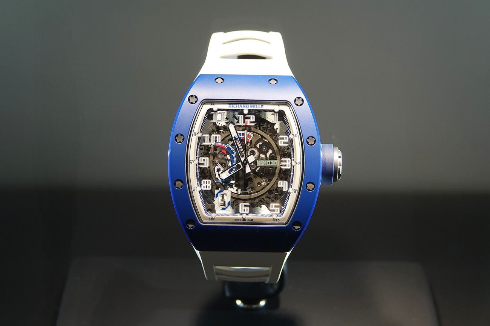

Two hundred pieces, $250: Guess lets a machine draw its watch
The AI Venix — a 42mm tonneau in printed plastic, quartz inside, 200 pieces, web-only — is the first fashion watch to sell its AI-generated design as the feature. WatchPro's verdict: it could pass for a Richard Mille across a room.

§1The print is the product.
Guess has released a watch whose designer is, in part, a machine. The AI Venix, out July 15 exclusively on guesswatches.com, is a 42mm-by-45mm tonneau-shaped quartz piece in plastic with a silicone strap, 50 meters of water resistance, three subdials — second time zone, date, day of the week — and an AI-generated print flowing across case, strap and even the packaging. It costs $250 and is limited to 200 pieces, per WatchPro's report, which noted the design "might be mistaken for a Richard Mille from across the room."
That comparison is the entire product.
§2A licensing giant runs the test.
That comparison is the entire product. The tonneau case, the skeletal visual busy-ness, the technical-organic surface pattern — the machine was clearly fed the language of six-figure avant-garde horology and asked to speak it in $250 materials. Guess watches are designed, manufactured and distributed under license by Sequel, a division of Timex Group, which makes this less an experiment by a fashion label than a licensed-watch giant testing whether 'AI-designed' sells as a feature on the dial side of the price divide.
§3Design was the last moat.
The trade has been here before — quartz in the seventies, fashion licensing in the nineties, smartwatches a decade ago — and each time the mechanical establishment declared itself unthreatened and was mostly right, at the price of ceding the entry-level wrist. The Venix probes a different seam: not accuracy or connectivity, but design itself, the one input luxury still claims cannot be automated. A limited run of 200 is a toe in the water; the data it returns — does the customer pay for the machine's drawing, or the story of it — will be read far above Guess's price point.
Nobody cross-shops a $250 quartz against a Richard Mille, and that is exactly why the piece matters — it tests, for the cost of a nice dinner, whether AI provenance excites or repels a watch buyer.
The houses will never say they are watching. They are watching.
The trade, filed to your inbox before the New York open.
Prices, tenders and the one story that moved the industry overnight — read in ninety seconds.
Subscribe free →